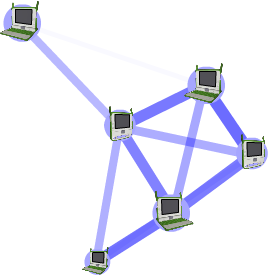
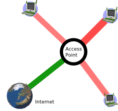

About Networks and the Internet
What is a network?
A computer network is a grouping of connected computers.
Types of networks
Networks are typically described by their scale: local-area network (LAN) covering a small geographic area, like a home, office, or building; wide-area network (WAN), covering a relatively broad geographic area (such as one city to another and one country to another country), Metropolitan-Area (MAN) connecting multiple local-area networks together but does not extend beyond the boundaries of the immediate village, town, city or area.
Sometimes networks are described by the hardware that connects the computers: satellite, optical fiber, Ethernet, wireless, and so on. Some networks use physical connections—wired—while others use radio waves—wireless.
You can name a network based on its functional relationship: client-server, peer-to-peer are good examples.
Finally, you can talk about networks by topology. Topology means the logical relations between devices. Examples include: bus, star, mesh, tree, etc.
OLPC XO networks
A typical OLPC XO network would be local-area, wireless, peer-to-peer, mesh. However, the XO supports (directly or indirectly) a variety networks.
The most common scenarios all utilize the built-in wireless radios:
- Simple mesh: XOs talking to each other without Internet access;
- Infrastructure: XOs connecting to the Internet through a preexisting access point (AP);
- School server: XOs talking to each other and the Internet through a school server.

Simple mesh network

Infrastructure network

School server network
The school server
Part of the OLPC deployment model is to utilize school servers. These servers are designed to provide a gateway to the Internet, a local content repository, back-up, school management, etc. As important as all of these services, their most critical role is to scale the local-area network. Without a school server, the largest network that can be maintained is approximately 20 laptops. Each school server can maintain a network of approximately 120 laptops.
The reasons for this difference include:
- By maintaining state information, the school server eliminates the need for much of the multicast traffic, which puts a heavy load in the network
- The school server can unify up to three separate mesh channels.
What is the Internet?
The Internet consists of a worldwide interconnection of governmental, academic, public, and private networks. The Internet carries various information resources and services, such as electronic mail, chat, documents, online gaming, and the the World Wide Web (WWW).
Get me the Internet!
Although the OLPC ecosystem provides a self-configuring local-area wireless network, connectivity to the Internet is something that needs to be worked out on an individual basis.
Glossary of Network-related terms
- mesh network
- a wireless mesh network is a communications network made up of radio nodes in which nodes can forward information on behalf of each other so that even nodes that are not in direct radio contact can communicate via nodes that are between them. The collective coverage area of the radio nodes working as a single network becomes a mesh cloud.
- infrastructure mode
- network connectivity through a WiFi access point, e.g., 802.11b/g
- mesh mode
- network connectivity through a mesh network (The Mesh Routing Protocol used in the OLPC laptop (OLPC-Mesh) is based on the 802.11s standard being developed by the 802.11 Task Group S [http://www.ieee802.org/11/Reports/tgs_update.htm].)
- simple mesh mode
- a mesh network that is running between laptops without a School Server
- school server mesh mode
- a mesh network that is mediated by a School Server
- mesh channel
- the laptops use three channels for communication: 1, 6, and 11; in simple mesh mode, the laptops can only see other laptops on the same channel; in a School Server mesh, laptops on all channels are visible
- access point (AP)
- an AP is a device that connects wireless communication devices together to form a wireless network. The AP usually connects to a wired network and can relay data between wireless devices and wired devices. Several APs can link together to form a larger network.
- mesh portal point
- a mesh node that serves as a gateway (portal) to a network external to the mesh
Author : AboutNetworksAndTheInternet
© Walter Bender 2008
Modifications:
Anne Gentle 2008
License : General Public License